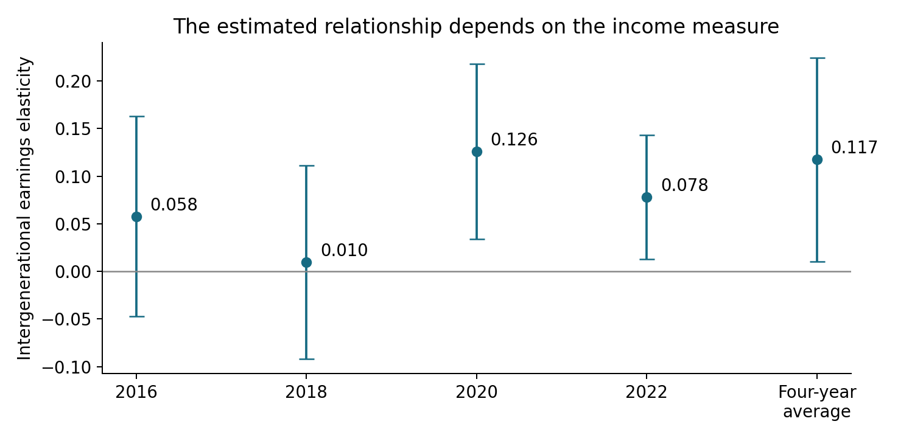
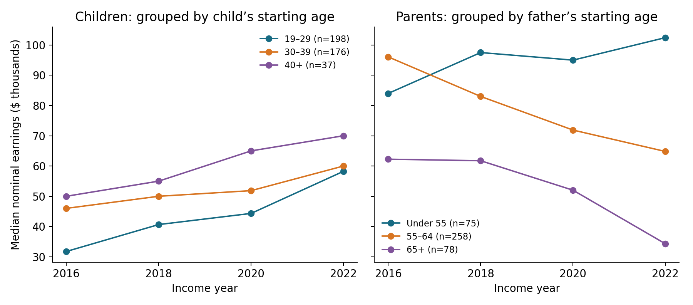

Does the year change the parent–child income relationship?
Higher-income parents may afford better education, helping children obtain better-paying jobs. To explore this relationship, we use SQL to match parents and children and regression to estimate the relationship between their earnings. We also compare single-year estimates with estimates based on income averaged across several years to assess how sensitive our results are to income measurement.
How do we match parents and children?
I use the Panel Study of Income Dynamics: the 2023 Parent Identification File, 1968–2023 Cross-Year Individual File, and 2017–2023 biennial Family Files. Earnings refer to 2016, 2018, 2020, and 2022.
“Income” here means individual labor earnings, excluding farm and unincorporated-business income and pensions. Parental earnings combine the recorded mother’s and father’s earnings; child earnings are their own.
From the Parent Identification File, we select identifiers linking each child to their recorded mother and father. From the Cross-Year Individual File, we select original family ID, person number, current family ID, age, and household role for each survey year. From the Family Files, we select earnings for the household reference person and spouse. We join individual and family records by current family ID and survey year, assign earnings by household role, and match children to their parents using individual identifiers.
A wave is one interview round. Matching within the same wave links all three people in the same survey year: for example, the 2017 interviews reporting 2016 earnings.
In Python, sqlite3 executes SQL; pd.read_sql_query returns results as DataFrames.
-- 1. SELECT the identifiers and earnings to keep.
SELECT l.child_id68, l.child_pn, ch.wave,
ch.earnings AS child_income,
mo.earnings + fa.earnings AS parent_income
FROM links l
-- 2. JOIN each child using original family ID + person number.
JOIN personal ch
ON ch.id68=l.child_id68 AND ch.pn=l.child_pn
-- 3. Match the recorded mother in the SAME survey wave.
JOIN personal mo
ON mo.id68=l.mother_id68 AND mo.pn=l.mother_pn
AND mo.wave=ch.wave
-- 4. Match the recorded father; never substitute a current spouse.
JOIN personal fa
ON fa.id68=l.father_id68 AND fa.pn=l.father_pn
AND fa.wave=ch.wave;The table tracks sample selection. “Children” counts distinct people; “child–year records” counts one observation per child per income year. Thus, 411 children observed over four years contribute 1,644 records. Valid records require all three people aged 19–110 and nonmissing earnings. Positive child earnings and parental sums permit logarithms; one parent can earn zero.
| Selection step | Children | Child–year records |
|---|---|---|
| Raw parent-ID file | 103,725 | — |
| Both parents identified | 41,622 | — |
| Child and both parents matched in the same survey year | 9,574 | 27,330 |
| Child and both parents aged 19–110, with nonmissing earnings (including zero) | 2,410 | 6,839 |
| Positive child and combined parent earnings | 1,788 | 4,232 |
| Eligible in all four waves | 411 | 1,644 |
| Average over the four income years | 411 | — |
-- balanced contains the 411 children eligible in all four years.
-- 5. AVG aggregates earnings in levels, before taking logs.
SELECT child_id68, child_pn,
AVG(parent_income) AS parent_income,
AVG(child_income) AS child_income
FROM balanced
-- GROUP BY collects each child’s records across waves.
GROUP BY child_id68, child_pn
-- HAVING retains groups containing all four observations.
HAVING COUNT(*)=4;Does the estimated relationship change by year?
Estimate OLS without additional controls, where is child earnings and is parental earnings:
The intergenerational elasticity (IGE), , measures the percentage difference in child earnings associated with 1% higher parental earnings. For the multi-year model, average earnings in levels before taking logs.

All estimates show a positive association between parental and child earnings. The estimates for 2020, 2022, and averaged income are statistically significant at the 5% level. The IGE is 0.126 in 2020, 0.078 in 2022, and 0.117 using averaged income. The 2016 and 2018 estimates are positive, but their confidence intervals include zero. Single-year estimates can vary with temporary earnings shocks and career stages. Averaging can smooth temporary fluctuations, making income a better measure of longer-run earnings. Next, we explore how parents’ and children’s life-cycle earnings patterns can affect these estimates.
How could life-cycle bias enter?

Median earnings rise in every child age group, while parental medians fall in both groups with fathers initially aged 55 or older. The youngest children rise from $31,750 to $58,250; parents in the oldest group fall from $62,250 to $34,279. The under-55 parent group rises overall. These patterns fit career progression and retirement.
A young worker’s earnings may understate later earning capacity, while older parents’ declining earnings may obscure earlier prosperity. Such age-dependent measurement can distort the IGE if people’s earnings trajectories differ; uniform proportional growth would only shift the intercept. Haider and Solon document this link between age and how well current earnings measure lifetime earnings.
Averaging spreads measurement across several career stages and reduces dependence on one unusually good or bad year. Here, it combines children’s earlier, lower earnings with later, higher earnings, and older parents’ earnings before and during their decline. The resulting IGE of 0.117 is less dependent on choosing 2018’s low estimate or 2020’s high one. It need not be the average of annual slopes.
Does ranking change the answer?
and represent the child’s and parents’ percentile positions within our sample. Rank child earnings and combined parental earnings separately, from lowest to highest. Equal earnings receive the average of their tied positions (midrank). Calculate:
Higher values indicate a higher position in that generation’s earnings distribution. Then estimate:
With averaged earnings, : a ten-percentile-point parental advantage is associated with 2.38 percentile points in child rank. Annual slopes range from 0.147 to 0.193.
IGE measures percentage earnings gaps; ranks measure relative positions, limiting extreme amounts’ influence but discarding gap sizes. Neither is universally better: use IGE for earnings differences and ranks for relative mobility.
Takeaway
Higher parental earnings are associated with higher child earnings. Using averaged income, the IGE of 0.117 means that 1% higher parental earnings are associated with approximately 0.117% higher child earnings. Averaged income can better reflect long-run earnings than single-year income by spanning career stages and reducing dependence on earnings at one age. The rank coefficient of 0.238 means that a ten-percentile-point parental earnings advantage is associated with a 2.38-percentile-point advantage in child earnings.
Sources and replication. PSID supplies the data; the project README documents variable definitions, data access, and how to reproduce the analysis.